一般的なイメージと実際の姿
多くの人は「電子が水道管の水のように電線の中を勢いよく流れて、そのエネルギーが運ばれる」とイメージしますが、正確ではありません。
「電線に電流が流れる」という現象は、実際には二つの異なるレベルの話が同時に起きているのです。
1. 電子の移動速度（ドリフト速度）と「一瞬」でつく理由
電線の中を実際に電子が移動する速度は、電流が数A程度なら毎秒わずか数mm～数cm程度です。
銅線の中の自由電子はもともと熱運動でランダムに高速（秒速数百km）で飛び回っていますが、電場によって生じる「全体としての片寄った移動（ドリフト）」は非常にゆっくりです。
スイッチを入れると電球はほぼ瞬時に光ります。これは電子そのものが瞬間移動するからではなく、電場が電線に沿ってほぼ光速で伝わり、電線中のすべての電子がほぼ同時に動き始めるからです。
水道管に例えると、水がすでにパイプいっぱいに満たされている状態でポンプを押すと、蛇口側の水がすぐに出てくるのと似ています（水分子自体が遠くから移動してくるわけではありません）。
3. エネルギーは電線の"中"を通っていない
電気エネルギーは、電線の内部（電子の流れ）を通って運ばれているのではなく、電線の周囲の空間にある電磁場を通って伝わります。
これはポインティングベクトル（Poynting vector, S = E × H）で表される、電磁場が運ぶエネルギーの流れです。
- 磁場 (H) の発生: 電線には電流によって磁場が発生します。
- 電場 (E) の発生: 電線の抵抗や電位差によって電場が発生します。
- エネルギーの流れ: この2つが外積を作ることで、電線を取り囲む空間にエネルギーの流れ（ポインティングベクトル）が生じ、電源から負荷（電球など）へエネルギーが運ばれます。
電子自体は電荷を運ぶ「媒介」ではありますが、エネルギーの主な伝達経路は導体の外側の場だということです。

2つのレベルにおける現象のまとめ
電磁気学（マクスウェル方程式）を学ぶと、この「場を通じたエネルギー伝達」という見方がむしろ標準的な理解であることがわかります。